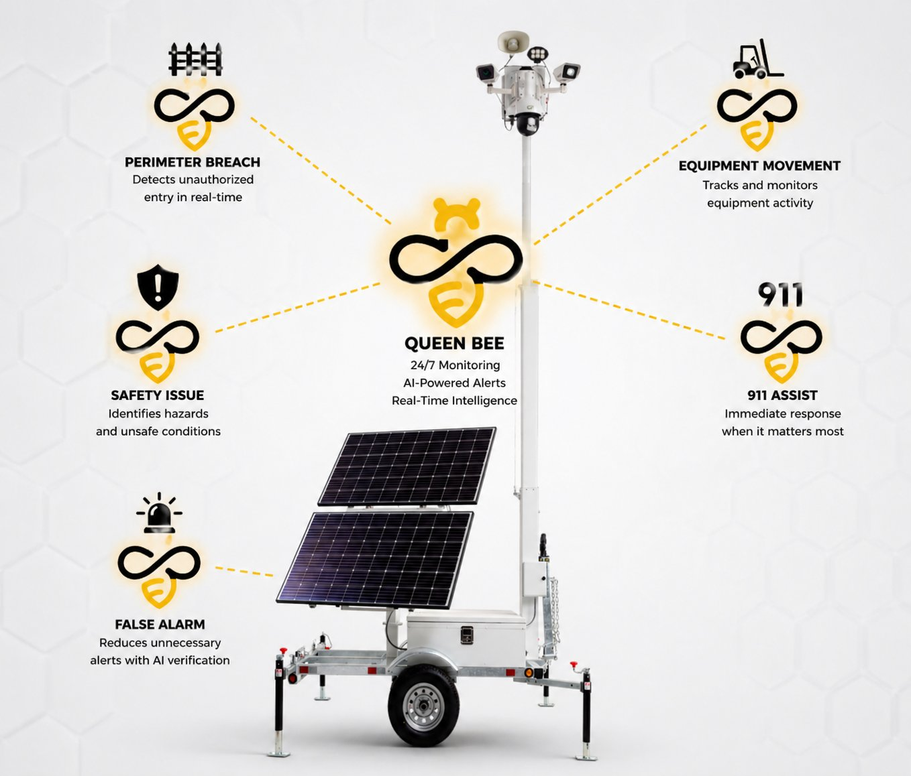

You already own the cameras. We add the intelligence.
One platform built specifically for construction and utilities. Your trailers + SentriOS = a more secure jobsite — extended to every world where cameras are deployed but intelligence is missing.
Security AI for the job site.
You own the cameras and the customer. We make every trailer autonomous — a high-margin agentic monitoring layer trained on how construction jobsites actually behave: your perimeter, your roster, your shift schedule.
Detect → Verify → Deter → Escalate → Resolve.
SentriOS turns the surveillance trailers already on your sites into an always-on security operator — one that detects, verifies, deters, escalates, and resolves incidents on its own. It protects the things that actually get stolen on jobsites: tools, materials, copper, fuel, equipment, trailers, and anything left out after hours. From first alert to 911 dispatch in 13 seconds, with no operator queue. No new hardware. No delays. And you can text it like a teammate.
What you get on every trailer
- Voice-down deterrence over site speakers
- Tiered SMS verification to your contacts
- 911 dispatch via RapidSOS in 13 seconds
- Two-way SMS chat + incident PDF into Procore
Meet Queen Bee — one trailer, every job-site risk covered.
24/7 monitoring, AI-powered alerts, and real-time intelligence — autonomously watching for perimeter breaches, equipment movement, and safety issues, cutting false alarms, with 911 assist when it matters most.

Advancing Utility Operations with Vision-Language AI.
SentriOS turns any existing camera into an intelligent operator — understanding smoke, fire, intrusion, access, and maintenance conditions in real time. Where legacy CV detects objects, SentriOS understands situations using VLMs, multi-modal context, and natural-language rules. Fully on-prem, behind your firewall.
Substation security — fewer false alarms.
The pain. Rule-based CV fires on motion, wildlife, weather, and shadows. Operators drown in noise and real escalations get lost.
The SentriOS difference. A VLM layer that filters alerts using context — who is on site, what is expected, when — for 10–100× fewer alerts, only the ones worth acting on.
What SentriOS delivers
- Reasons about scenes, intent, and relationships — not bounding boxes
- Self-learning per-site baselines
- Native integration with Milestone, Genetec, Avigilon, Axis, Hanwha
- On-prem / air-gapped for NERC-CIP and OT-aligned environments
How we start with you
- Pick 1–10 substations with high nuisance alarms for a ≤60-day paid pilot
- Share your camera + VMS inventory and false-alarm metrics
- Target ≥95% false-positive reduction with your ops team
- Deploy behind your firewall in 2–4 weeks
Wildfire & PSPS — augment human observers.
The pain. Decisions depend on scarce, costly observers and many dashboards; de-energization affects thousands of customers.
The SentriOS difference. Visual agents monitor cameras 24/7, describe what they see in plain language, and fuse it with weather, fuel, satellite, and circuit telemetry — with cited, ranked, impact-identified answers.
What SentriOS delivers
- Promptable visual agents — define what to watch for in plain language
- Multi-modal fusion: video + weather (HRRR/GFS) + satellite + telemetry
- Custom rules and event search across months of footage
- Live PSPS dashboard with operator chat and audit trail
How we start with you
- Identify the PSPS ops team and one priority circuit or HFTD zone
- Connect existing or new wildfire / circuit feeds — any camera, any VMS
- Interface with ADMS / OMS / weather / fuel feeds in your environment
- Run a 60-day live pilot measured on coverage and decision latency
Co-develop tailored VLMs for asset inspection.
The pain. Volumes of drone, helicopter, climber, and phone imagery — and single-task models that each need thousands of new labels. Adding a modality means starting over.
The SentriOS difference. We co-develop a VLM on your data, behind your firewall. It warm-starts to Day-1 parity, then compounds 10× as it ingests new imagery and your O&M manuals — every infraction cited to the rule.
What SentriOS delivers
- Pretrained multi-utility VLM + 120K+ labeled images for warm-start
- One model across drone RGB, thermal, helicopter, climber, phone
- On-prem training + inference; you own the weights and audit trail (SHA-256)
- 10× target reduction in missed P1/P2 defects in 16 weeks
How we start with you
- Pick one circuit or substation cluster for a 12–16 week pilot
- Provide imagery archives and your incumbent ML/CV baseline
- ~4 hrs/wk of SME time for rulebook validation
- You keep the weights, data, and audit trails — no vendor lock-in
An AI co-inspector for virtual inspections.
Cameras already capture the ground truth. SentriOS understands what they see — turning photos and video into cited, structured findings, working alongside your human reviewers. Enhancement, not replacement.
Human bottleneck
Reviewers cap throughput and create delays.
Inconsistent reviews
Variable interpretation across teams.
Manual QA delays
Time-consuming checks lead to rework.
Compliance at scale
Hard to hold standards as you grow.
Capture image / video
Field data submitted to the platform.
AI analysis
The model understands context, not just pixels.
Comprehensive report
Structured, cited findings into your workflow.
Vision-language understanding
Comprehends visual context across inspection types.
Issue detection
Identifies and classifies problems automatically.
Context-aware analysis
Understands pool, roof, equipment, and site contexts.
Structured reports
Clear, actionable findings with a full audit trail.
Find the right fit for your sites.
A 30-minute working session — bring your camera and VMS inventory, and we'll map the agentic layer to what you already run.